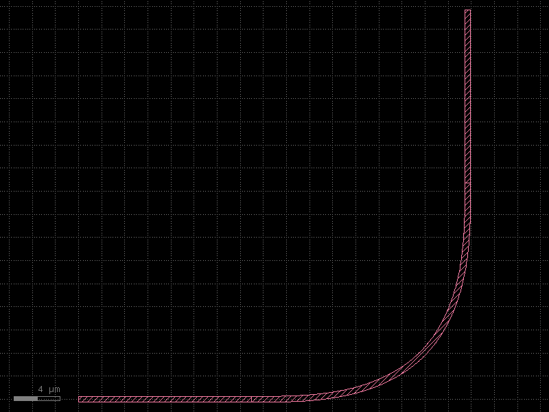

Netlist & Schematic I/O
This page dives into the Netlist data model — the representation that kfactory uses for connectivity — and shows how to:
- Inspect the
Netlistobject (instances, nets, ports) - Serialize a schematic to JSON/YAML and reload it with
kf.read_schematic - Compare netlists and sort them for stable equality checks
- Handle electrically-equivalent ports (pads, bumps) with
lvs_equivalent
For the schematic-first design workflow itself (placement, connect, LVS basics) see
the Schematic-Driven Design page.
import json
import tempfile
from pathlib import Path
from kfnetlist import PortRef
import kfactory as kf
PDK setup
We reuse the same minimal PDK from the overview page — a straight waveguide and a 90 °
euler bend, both registered on a dedicated KCLayout.
class LAYER(kf.LayerInfos):
WG: kf.kdb.LayerInfo = kf.kdb.LayerInfo(1, 0)
WGEX: kf.kdb.LayerInfo = kf.kdb.LayerInfo(2, 0)
L = LAYER()
pdk = kf.KCLayout("SCHEM_NETLIST", infos=LAYER)
@pdk.cell
def straight(width: int, length: int) -> kf.KCell:
"""Straight waveguide segment.
Args:
width: Width in dbu.
length: Length in dbu.
"""
c = pdk.kcell()
c.shapes(L.WG).insert(kf.kdb.Box(0, -width // 2, length, width // 2))
c.create_port(
name="o1",
width=width,
trans=kf.kdb.Trans(rot=2, mirrx=False, x=0, y=0),
layer_info=L.WG,
)
c.create_port(
name="o2",
width=width,
trans=kf.kdb.Trans(x=length, y=0),
layer_info=L.WG,
)
return c
@pdk.cell
def bend90(width: int, radius: int) -> kf.KCell:
"""90° Euler bend.
Args:
width: Width in dbu.
radius: Nominal bend radius in dbu.
"""
return kf.factories.euler.bend_euler_factory(kcl=pdk)(
width=pdk.to_um(width),
radius=pdk.to_um(radius),
layer=L.WG,
)
Building a schematic for inspection
A simple L-shaped path: s1 → b1 → s2.
@pdk.schematic_cell
def l_path() -> kf.Schematic:
schematic = kf.Schematic(kcl=pdk)
s1 = schematic.create_inst("s1", "straight", {"width": 500, "length": 15_000})
b1 = schematic.create_inst("b1", "bend90", {"width": 500, "radius": 10_000})
s2 = schematic.create_inst("s2", "straight", {"width": 500, "length": 15_000})
s1.place(x=0, y=0)
b1.connect("o1", s1.ports["o2"])
s2.connect("o1", b1.ports["o2"])
return schematic
cell = l_path()
cell

The Netlist data model
KCell.netlist() returns a dict[str, Netlist] keyed by cell name. Each Netlist
has three attributes:
| Attribute | Type | Meaning |
|---|---|---|
instances |
dict[str, NetlistInstance] |
Every sub-cell placed in this cell |
nets |
list[Net] |
Each net is a list of PortRef / NetlistPort entries that are connected |
ports |
list[NetlistPort] |
Top-level ports exposed by this cell |
A PortRef identifies a port by instance name and port name: PortRef(instance="s1", port="o2").
A NetlistPort identifies a cell-level port by name.
netlists = cell.netlist()
nl = netlists[cell.name]
print(f"Instances ({len(nl.instances)}):")
for name, inst in nl.instances.items():
print(f" {name}: component={inst.component!r} settings={inst.settings}")
print(f"\nNets ({len(nl.nets)}):")
for i, net in enumerate(nl.nets):
parts = []
for p in net:
if isinstance(p, PortRef):
parts.append(f"{p.instance}.{p.port}")
else:
parts.append(f"<cell-port:{p.name}>")
print(f" net[{i}]: {' — '.join(parts)}")
print(f"\nTop-level ports ({len(nl.ports)}): {[p.name for p in nl.ports]}")
Instances (3):
b1: component='bend90' settings={'radius': 10000, 'width': 500}
s1: component='straight' settings={'length': 15000, 'width': 500}
s2: component='straight' settings={'length': 15000, 'width': 500}
Nets (2):
net[0]: b1.o1 — s1.o2
net[1]: b1.o2 — s2.o1
Top-level ports (0): []
Sorting nets for stable comparison
Port ordering within a net and the order of nets across the netlist can vary between
runs. Netlist.sort() normalises both, making equality checks reproducible.
nl_a = cell.netlist()[cell.name]
nl_b = cell.netlist()[cell.name]
# sort() modifies in-place and returns self
nl_a.sort()
nl_b.sort()
assert nl_a == nl_b
print("Sorted netlists are equal ✓")
Sorted netlists are equal ✓
Schematic serialization
A Schematic is a Pydantic model, so standard Pydantic serialization methods work
directly.
JSON export
model = cell.schematic
raw_json = model.model_dump_json(indent=2)
data = json.loads(raw_json)
# Show the top-level keys present in the serialized schematic
print("Top-level keys:", list(data.keys()))
# Show the placements section
print("\nPlacements:")
for name, placement in data.get("placements", {}).items():
print(f" {name}: {placement}")
Top-level keys: ['name', 'instances', 'placements', 'nets', 'routes', 'ports', 'pins', 'constraints', 'unit', 'info']
Placements:
s1: {'mirror': False, 'x': 0, 'dx': 0, 'y': 0, 'dy': 0, 'orientation': 0.0, 'anchor': None}
/home/runner/work/_temp/setup-uv-cache/archive-v0/Rp9E_aS3dHcRNXsh/lib/python3.14/site-packages/pydantic/main.py:542: UserWarning: Pydantic serializer warnings:
PydanticSerializationUnexpectedValue(Expected `RouteNet[Annotated[int, str]]` - serialized value may not be as expected [field_name='nets', input_value=Connection[TypeVar](net=(...tance='s1', port='o2'))), input_type=Connection[TypeVar]])
PydanticSerializationUnexpectedValue(Expected `Connection[Annotated[int, str]]` - serialized value may not be as expected [field_name='nets', input_value=Connection[TypeVar](net=(...tance='s1', port='o2'))), input_type=Connection[TypeVar]])
PydanticSerializationUnexpectedValue(Expected `VirtualConnection[Annotated[int, str]]` - serialized value may not be as expected [field_name='nets', input_value=Connection[TypeVar](net=(...tance='s1', port='o2'))), input_type=Connection[TypeVar]])
PydanticSerializationUnexpectedValue(Expected `RouteNet[Annotated[int, str]]` - serialized value may not be as expected [field_name='nets', input_value=Connection[TypeVar](net=(...tance='s2', port='o1'))), input_type=Connection[TypeVar]])
PydanticSerializationUnexpectedValue(Expected `Connection[Annotated[int, str]]` - serialized value may not be as expected [field_name='nets', input_value=Connection[TypeVar](net=(...tance='s2', port='o1'))), input_type=Connection[TypeVar]])
PydanticSerializationUnexpectedValue(Expected `VirtualConnection[Annotated[int, str]]` - serialized value may not be as expected [field_name='nets', input_value=Connection[TypeVar](net=(...tance='s2', port='o1'))), input_type=Connection[TypeVar]])
return self.__pydantic_serializer__.to_json(
YAML round-trip with read_schematic
Schematics are typically stored as YAML files for version control. kf.read_schematic
loads them back into a Schematic (or DSchematic when unit="um").
Schematic is also a Pydantic model, so model_validate works directly with a
dictionary from yaml.safe_load — or you can use the convenience read_schematic helper.
with tempfile.TemporaryDirectory() as tmpdir:
yaml_path = Path(tmpdir) / "l_path.yaml"
# Exclude the 'unit' field — it is fixed by the Schematic subclass and must not
# be present in the serialized payload for read_schematic to accept it.
yaml_path.write_text(model.model_dump_json(indent=2, exclude={"unit"}))
# Read back. NOTE: a known upstream bug currently prevents the JSON
# produced by `model_dump_json` from round-tripping through
# `read_schematic` when nets are present (see kfactory issue tracker —
# the `nets` validator expects `{"p1": ..., "p2": ...}` keys but
# `model_dump_json` serialises them as nested arrays). The pattern is
# shown for documentation; uncomment to test once the upstream fix lands.
try:
reloaded = kf.read_schematic(yaml_path, unit="dbu")
print("Reloaded schematic instances:", list(reloaded.instances.keys()))
print("Reloaded schematic placements:", list(reloaded.placements.keys()))
except KeyError as exc:
print(f"(known upstream round-trip bug — KeyError: {exc})")
(known upstream round-trip bug — KeyError: 'p1')
The reloaded schematic carries the same instance definitions and placements.
Calling reloaded.create_cell(output_type=kf.KCell, factories={"straight": straight, "bend90": bend90})
would materialise an identical physical cell.
LVS with electrically-equivalent ports
Some components — pads, bumps, redistribution-layer vias — have multiple ports that are electrically equivalent: they all connect to the same metal plane. A naive LVS comparison would fail because the extracted netlist tracks every individual port, while the schematic may only declare one logical connection.
Netlist.lvs_equivalent folds equivalent ports into a single canonical name so that
the two netlists can be compared meaningfully.
Defining a pad component with two equivalent ports
@pdk.cell
def pad(port_width: int, size: int) -> kf.KCell:
"""Square metal pad with two optical connections for demo purposes.
In a real PDK this might be a bump or redistribution via where
port 'p1' and 'p2' land on the same metal island.
Args:
port_width: Width of each connecting port in dbu (must match the waveguide).
size: Side length of the square pad body in dbu.
"""
c = pdk.kcell()
c.shapes(L.WG).insert(kf.kdb.Box(0, 0, size, size))
# Two ports on opposite edges — electrically the same metal
c.create_port(
name="p1",
width=port_width,
trans=kf.kdb.Trans(rot=2, mirrx=False, x=0, y=size // 2),
layer_info=L.WG,
)
c.create_port(
name="p2",
width=port_width,
trans=kf.kdb.Trans(x=size, y=size // 2),
layer_info=L.WG,
)
return c
Building and extracting a netlist that contains the pad
@pdk.schematic_cell
def pad_circuit() -> kf.Schematic:
schematic = kf.Schematic(kcl=pdk)
s1 = schematic.create_inst("s1", "straight", {"width": 500, "length": 10_000})
pad_inst = schematic.create_inst("pad1", "pad", {"port_width": 500, "size": 5_000})
s1.place(x=0, y=0)
pad_inst.connect("p1", s1.ports["o2"])
return schematic
pad_cell = pad_circuit()
extracted = pad_cell.netlist()[pad_cell.name]
extracted.sort()
print("Extracted nets (before equivalence mapping):")
for i, net in enumerate(extracted.nets):
parts = [
f"{p.instance}.{p.port}" if isinstance(p, PortRef) else p.name for p in net
]
print(f" net[{i}]: {parts}")
Extracted nets (before equivalence mapping):
net[0]: ['pad1.p1', 's1.o2']
Notice that pad1.p1 and pad1.p2 appear in separate nets even though they are the
same metal island. lvs_equivalent merges them:
# equivalent_ports maps component-name → list-of-equivalent-port-groups
# Each group is a list of port names that should be treated as one.
equivalent_ports = {
"pad": [["p1", "p2"]], # p1 and p2 on any "pad" cell are the same
}
equiv_netlist = extracted.lvs_equivalent(
cell_name=pad_cell.name,
equivalent_ports=equivalent_ports,
)
equiv_netlist.sort()
print("Nets after equivalence mapping:")
for i, net in enumerate(equiv_netlist.nets):
parts = [
f"{p.instance}.{p.port}" if isinstance(p, PortRef) else p.name for p in net
]
print(f" net[{i}]: {parts}")
Nets after equivalence mapping:
net[0]: ['pad1.p1', 's1.o2']
After mapping, pad1.p2 is folded into pad1.p1 so the net now contains both the
straight waveguide endpoint and the canonical pad port in a single net.
Building a Netlist programmatically
You can also construct a Netlist directly without going through a schematic — useful
for testing or for importing connectivity from an external source.
from kfactory import Netlist
manual_nl = Netlist()
# Add instance definitions
manual_nl.create_inst(
"wg1", kcl="MY_PDK", component="straight", settings={"width": 500, "length": 10_000}
)
manual_nl.create_inst(
"wg2", kcl="MY_PDK", component="straight", settings={"width": 500, "length": 10_000}
)
# Add a top-level port
p_in = manual_nl.create_port("in")
# Connect: cell-level "in" is tied to wg1.o1
manual_nl.create_net(p_in, PortRef(instance="wg1", port="o1"))
# Internal net: wg1.o2 connects to wg2.o1
manual_nl.create_net(
PortRef(instance="wg1", port="o2"),
PortRef(instance="wg2", port="o1"),
)
manual_nl.sort()
print("Instances:", list(manual_nl.instances.keys()))
print("Top-level ports:", [p.name for p in manual_nl.ports])
print("Nets:")
for i, net in enumerate(manual_nl.nets):
parts = [
f"{p.instance}.{p.port}" if isinstance(p, PortRef) else f"<{p.name}>"
for p in net
]
print(f" net[{i}]: {parts}")
Instances: ['wg1', 'wg2']
Top-level ports: ['in']
Nets:
net[0]: ['<in>', 'wg1.o1']
net[1]: ['wg1.o2', 'wg2.o1']
Summary
| Task | API |
|---|---|
| Extract netlist from a cell | cell.netlist() → dict[str, Netlist] |
| Iterate nets | for net in nl.nets: for p in net: ... |
| Sort for stable comparison | nl.sort() |
| Export schematic to JSON | schematic.model_dump_json() |
| Load schematic from YAML/JSON file | kf.read_schematic(path, unit="dbu") |
| Fold equivalent ports for LVS | nl.lvs_equivalent(cell_name, equivalent_ports) |
| Build a netlist without a schematic | Netlist(); nl.create_inst(...); nl.create_net(...) |
See Also
| Topic | Where |
|---|---|
| Schematic placement & connections | Schematics: Overview |
| 45° crossing with virtual cells | Schematics: 45° Crossing |
| Creating a full PDK | PDK: Creating a PDK |